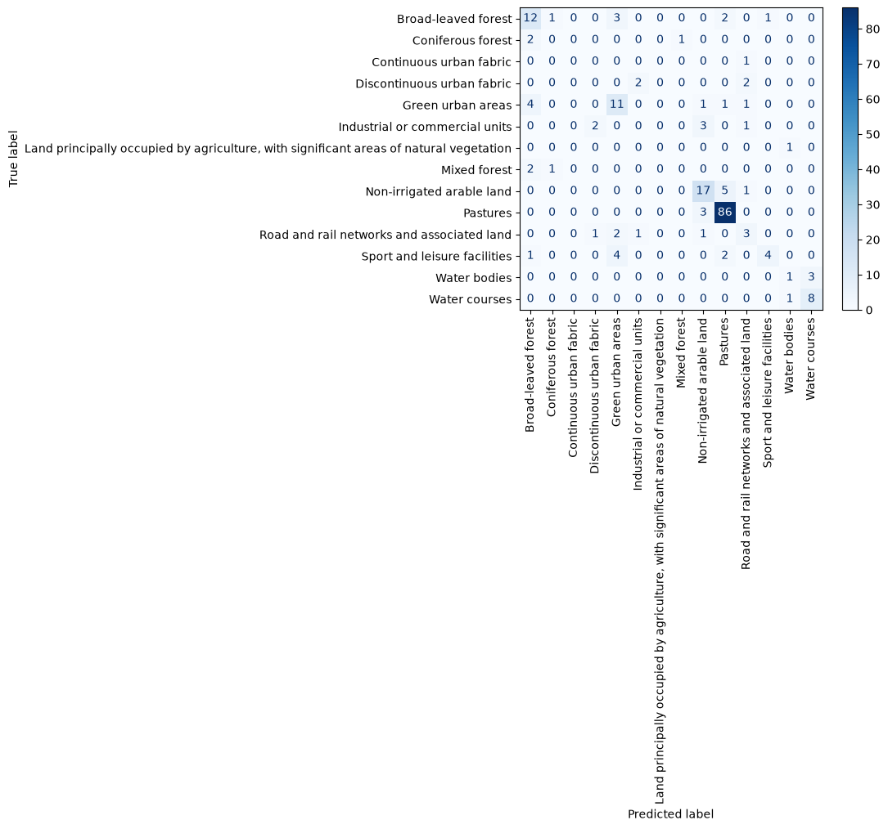

3. Space-time overlay#
:class:~skmap.overlay.SpaceTimeOverlay slices the catalogue by date range (via :meth:~skmap.io.RasterData.filter_date) and, for each range, samples the matching raster layers at the point locations. The result is a table with the original columns plus one column per raster feature (season name).
4. Setup#
We start by importing the modules used in this tutorial.
[1]:
import os
os.environ["PROJ_LIB"] = "/skmap/lib/python3.12/site-packages/rasterio/proj_data"
os.environ["PROJ_DATA"] = "/skmap/lib/python3.12/site-packages/rasterio/proj_data"
[2]:
import warnings
warnings.filterwarnings("ignore")
from pathlib import Path
import numpy as np
import pandas as pd
from skmap.io import RasterData
from skmap.data import toy
from skmap.overlay import SpaceTimeOverlay
5. Dataset#
The toy dataset ships a set of land-cover training points (samples.gpkg) and a few raster layers covering the same 256 x 256 grid (EPSG:3035):
static/elevandstatic/slope— static terrain layers,ndvi/filledandswir1— quarterly Landsat composites (2014-2020).
Let’s load the training points.
[3]:
samples = toy.lc_samples()
samples.head()
[3]:
| date | label | code | target | geometry | |
|---|---|---|---|---|---|
| 0 | 2019-01-01 | Non-irrigated arable land | 211 | 12 | POINT (4027365.527 3213354.075) |
| 1 | 2019-01-01 | Non-irrigated arable land | 211 | 12 | POINT (4023031.781 3217702.786) |
| 2 | 2019-01-01 | Pastures | 231 | 18 | POINT (4025421.04 3210923.411) |
| 3 | 2019-01-01 | Road and rail networks and associated land | 122 | 4 | POINT (4027809.718 3215667.456) |
| 4 | 2019-01-01 | Pastures | 231 | 18 | POINT (4026861.747 3213664.458) |
[4]:
samples["label"].value_counts()
[4]:
label
Pastures 115
Non-irrigated arable land 30
Green urban areas 26
Broad-leaved forest 21
Sport and leisure facilities 14
Road and rail networks and associated land 10
Water courses 9
Discontinuous urban fabric 7
Industrial or commercial units 7
Continuous urban fabric 5
Water bodies 4
Mixed forest 4
Coniferous forest 3
Land principally occupied by agriculture, with significant areas of natural vegetation 1
Name: count, dtype: int64
Each point has a date (used by the space-time overlay to pick the matching temporal composite), a label (the land-cover class name), a code (CORINE code) and a target (the integer class id we will predict).
6. Building the catalog#
A :class:~skmap.io.RasterData is loaded directly from the toy layers.yaml catalogue via :meth:~skmap.io.RasterData.from_yaml. The catalogue expands the NDVI/SWIR-1 seasonal composites (with year-agnostic season names) and the static terrain layers. We keep the gap-filled NDVI (variant != 'gappy') and restrict the temporal layers to the full years 2015-2019.
[5]:
toy.LAYERS_YAML
[5]:
PosixPath('/root/scikit-map/skmap/data/toy/layers.yaml')
[6]:
backend='cpp' # numba, numpy
rdata = (
RasterData.from_yaml(str(toy.LAYERS_YAML), base_path=str(toy.DATA_DIR), backend=backend)
.filter("variant != 'gappy'")
.filter_date("2015-01-01", "2019-12-31", include_non_temporal=True, by_start_date=True)
)
rdata.get_groups()
[6]:
['ndvi', 'swir1']
7. Space-time overlay#
:class:~skmap.overlay.SpaceTimeOverlay groups the points by year (using the date column) and, for each year, samples the matching raster layers at the point locations. The result is a table with the original columns plus one column per raster feature.
[8]:
rdata.info
[8]:
| group | input_path | input_band | start_date | end_date | temporal | name | band | variant | season | year | |
|---|---|---|---|---|---|---|---|---|---|---|---|
| 0 | ndvi | /root/scikit-map/skmap/data/toy/ndvi/filled/nd... | 1 | 2015-03-21 | 2015-06-24 | True | ndvi_spring | ndvi | filled | spring | 2015.0 |
| 1 | ndvi | /root/scikit-map/skmap/data/toy/ndvi/filled/nd... | 1 | 2015-06-25 | 2015-09-12 | True | ndvi_summer | ndvi | filled | summer | 2015.0 |
| 2 | ndvi | /root/scikit-map/skmap/data/toy/ndvi/filled/nd... | 1 | 2015-09-13 | 2015-12-01 | True | ndvi_fall | ndvi | filled | fall | 2015.0 |
| 3 | ndvi | /root/scikit-map/skmap/data/toy/ndvi/filled/nd... | 1 | 2015-12-02 | 2016-03-20 | True | ndvi_winter | ndvi | filled | winter | 2015.0 |
| 4 | ndvi | /root/scikit-map/skmap/data/toy/ndvi/filled/nd... | 1 | 2016-03-21 | 2016-06-24 | True | ndvi_spring | ndvi | filled | spring | 2016.0 |
| 5 | ndvi | /root/scikit-map/skmap/data/toy/ndvi/filled/nd... | 1 | 2016-06-25 | 2016-09-12 | True | ndvi_summer | ndvi | filled | summer | 2016.0 |
| 6 | ndvi | /root/scikit-map/skmap/data/toy/ndvi/filled/nd... | 1 | 2016-09-13 | 2016-12-01 | True | ndvi_fall | ndvi | filled | fall | 2016.0 |
| 7 | ndvi | /root/scikit-map/skmap/data/toy/ndvi/filled/nd... | 1 | 2016-12-02 | 2017-03-20 | True | ndvi_winter | ndvi | filled | winter | 2016.0 |
| 8 | ndvi | /root/scikit-map/skmap/data/toy/ndvi/filled/nd... | 1 | 2017-03-21 | 2017-06-24 | True | ndvi_spring | ndvi | filled | spring | 2017.0 |
| 9 | ndvi | /root/scikit-map/skmap/data/toy/ndvi/filled/nd... | 1 | 2017-06-25 | 2017-09-12 | True | ndvi_summer | ndvi | filled | summer | 2017.0 |
| 10 | ndvi | /root/scikit-map/skmap/data/toy/ndvi/filled/nd... | 1 | 2017-09-13 | 2017-12-01 | True | ndvi_fall | ndvi | filled | fall | 2017.0 |
| 11 | ndvi | /root/scikit-map/skmap/data/toy/ndvi/filled/nd... | 1 | 2017-12-02 | 2018-03-20 | True | ndvi_winter | ndvi | filled | winter | 2017.0 |
| 12 | ndvi | /root/scikit-map/skmap/data/toy/ndvi/filled/nd... | 1 | 2018-03-21 | 2018-06-24 | True | ndvi_spring | ndvi | filled | spring | 2018.0 |
| 13 | ndvi | /root/scikit-map/skmap/data/toy/ndvi/filled/nd... | 1 | 2018-06-25 | 2018-09-12 | True | ndvi_summer | ndvi | filled | summer | 2018.0 |
| 14 | ndvi | /root/scikit-map/skmap/data/toy/ndvi/filled/nd... | 1 | 2018-09-13 | 2018-12-01 | True | ndvi_fall | ndvi | filled | fall | 2018.0 |
| 15 | ndvi | /root/scikit-map/skmap/data/toy/ndvi/filled/nd... | 1 | 2018-12-02 | 2019-03-20 | True | ndvi_winter | ndvi | filled | winter | 2018.0 |
| 16 | ndvi | /root/scikit-map/skmap/data/toy/ndvi/filled/nd... | 1 | 2019-03-21 | 2019-06-24 | True | ndvi_spring | ndvi | filled | spring | 2019.0 |
| 17 | ndvi | /root/scikit-map/skmap/data/toy/ndvi/filled/nd... | 1 | 2019-06-25 | 2019-09-12 | True | ndvi_summer | ndvi | filled | summer | 2019.0 |
| 18 | ndvi | /root/scikit-map/skmap/data/toy/ndvi/filled/nd... | 1 | 2019-09-13 | 2019-12-01 | True | ndvi_fall | ndvi | filled | fall | 2019.0 |
| 19 | ndvi | /root/scikit-map/skmap/data/toy/ndvi/filled/nd... | 1 | 2019-12-02 | 2020-03-20 | True | ndvi_winter | ndvi | filled | winter | 2019.0 |
| 20 | swir1 | /root/scikit-map/skmap/data/toy/swir1/swir1_la... | 1 | 2015-03-21 | 2015-06-24 | True | swir1_spring | swir1 | NaN | spring | 2015.0 |
| 21 | swir1 | /root/scikit-map/skmap/data/toy/swir1/swir1_la... | 1 | 2015-06-25 | 2015-09-12 | True | swir1_summer | swir1 | NaN | summer | 2015.0 |
| 22 | swir1 | /root/scikit-map/skmap/data/toy/swir1/swir1_la... | 1 | 2015-09-13 | 2015-12-01 | True | swir1_fall | swir1 | NaN | fall | 2015.0 |
| 23 | swir1 | /root/scikit-map/skmap/data/toy/swir1/swir1_la... | 1 | 2015-12-02 | 2016-03-20 | True | swir1_winter | swir1 | NaN | winter | 2015.0 |
| 24 | swir1 | /root/scikit-map/skmap/data/toy/swir1/swir1_la... | 1 | 2016-03-21 | 2016-06-24 | True | swir1_spring | swir1 | NaN | spring | 2016.0 |
| 25 | swir1 | /root/scikit-map/skmap/data/toy/swir1/swir1_la... | 1 | 2016-06-25 | 2016-09-12 | True | swir1_summer | swir1 | NaN | summer | 2016.0 |
| 26 | swir1 | /root/scikit-map/skmap/data/toy/swir1/swir1_la... | 1 | 2016-09-13 | 2016-12-01 | True | swir1_fall | swir1 | NaN | fall | 2016.0 |
| 27 | swir1 | /root/scikit-map/skmap/data/toy/swir1/swir1_la... | 1 | 2016-12-02 | 2017-03-20 | True | swir1_winter | swir1 | NaN | winter | 2016.0 |
| 28 | swir1 | /root/scikit-map/skmap/data/toy/swir1/swir1_la... | 1 | 2017-03-21 | 2017-06-24 | True | swir1_spring | swir1 | NaN | spring | 2017.0 |
| 29 | swir1 | /root/scikit-map/skmap/data/toy/swir1/swir1_la... | 1 | 2017-06-25 | 2017-09-12 | True | swir1_summer | swir1 | NaN | summer | 2017.0 |
| 30 | swir1 | /root/scikit-map/skmap/data/toy/swir1/swir1_la... | 1 | 2017-09-13 | 2017-12-01 | True | swir1_fall | swir1 | NaN | fall | 2017.0 |
| 31 | swir1 | /root/scikit-map/skmap/data/toy/swir1/swir1_la... | 1 | 2017-12-02 | 2018-03-20 | True | swir1_winter | swir1 | NaN | winter | 2017.0 |
| 32 | swir1 | /root/scikit-map/skmap/data/toy/swir1/swir1_la... | 1 | 2018-03-21 | 2018-06-24 | True | swir1_spring | swir1 | NaN | spring | 2018.0 |
| 33 | swir1 | /root/scikit-map/skmap/data/toy/swir1/swir1_la... | 1 | 2018-06-25 | 2018-09-12 | True | swir1_summer | swir1 | NaN | summer | 2018.0 |
| 34 | swir1 | /root/scikit-map/skmap/data/toy/swir1/swir1_la... | 1 | 2018-09-13 | 2018-12-01 | True | swir1_fall | swir1 | NaN | fall | 2018.0 |
| 35 | swir1 | /root/scikit-map/skmap/data/toy/swir1/swir1_la... | 1 | 2018-12-02 | 2019-03-20 | True | swir1_winter | swir1 | NaN | winter | 2018.0 |
| 36 | swir1 | /root/scikit-map/skmap/data/toy/swir1/swir1_la... | 1 | 2019-03-21 | 2019-06-24 | True | swir1_spring | swir1 | NaN | spring | 2019.0 |
| 37 | swir1 | /root/scikit-map/skmap/data/toy/swir1/swir1_la... | 1 | 2019-06-25 | 2019-09-12 | True | swir1_summer | swir1 | NaN | summer | 2019.0 |
| 38 | swir1 | /root/scikit-map/skmap/data/toy/swir1/swir1_la... | 1 | 2019-09-13 | 2019-12-01 | True | swir1_fall | swir1 | NaN | fall | 2019.0 |
| 39 | swir1 | /root/scikit-map/skmap/data/toy/swir1/swir1_la... | 1 | 2019-12-02 | 2020-03-20 | True | swir1_winter | swir1 | NaN | winter | 2019.0 |
| 40 | common | /root/scikit-map/skmap/data/toy/static/elev.lo... | 1 | NaT | NaT | False | elev | NaN | NaN | NaN | NaN |
| 41 | common | /root/scikit-map/skmap/data/toy/static/slope.p... | 1 | NaT | NaT | False | slope | NaN | NaN | NaN | NaN |
[9]:
overlay = SpaceTimeOverlay(
points=samples,
col_date="date",
rasterdata=rdata,
date_ranges=[(f"{y}-01-01", f"{y}-12-31") for y in range(2015, 2020)],
raster_tiles=None,
verbose=False,
)
train = overlay.run(max_ram_mb=512, out_file_name=None)
train.head()
Dropping 0 points out of 41 because out of extent
Dropping 0 points out of 37 because out of extent
Dropping 0 points out of 40 because out of extent
Dropping 0 points out of 43 because out of extent
Dropping 0 points out of 38 because out of extent
[9]:
| date | label | code | target | lon | lat | ndvi_spring | ndvi_summer | ndvi_fall | ndvi_winter | swir1_spring | swir1_summer | swir1_fall | swir1_winter | elev | slope | |
|---|---|---|---|---|---|---|---|---|---|---|---|---|---|---|---|---|
| 0 | 2015-01-01 | Pastures | 231 | 18 | 4.024372e+06 | 3.214363e+06 | 84.0 | 82.0 | 74.0 | 58.0 | 51.0 | 46.0 | 55.0 | 61.0 | 58.0 | 43.0 |
| 1 | 2015-01-01 | Pastures | 231 | 18 | 4.020732e+06 | 3.212050e+06 | 77.0 | 66.0 | 68.0 | 38.0 | 34.0 | 46.0 | 45.0 | 21.0 | 57.0 | 33.0 |
| 2 | 2015-01-01 | Broad-leaved forest | 311 | 23 | 4.026238e+06 | 3.215984e+06 | 80.0 | 82.0 | 71.0 | 67.0 | 32.0 | 25.0 | 36.0 | 35.0 | 295.0 | 24.0 |
| 3 | 2015-01-01 | Broad-leaved forest | 311 | 23 | 4.027110e+06 | 3.216442e+06 | 84.0 | 83.0 | 71.0 | 79.0 | 37.0 | 30.0 | 35.0 | 22.0 | 163.0 | 16.0 |
| 4 | 2015-01-01 | Water bodies | 512 | 41 | 4.023718e+06 | 3.213876e+06 | 6.0 | 0.0 | 24.0 | 26.0 | 5.0 | 4.0 | 18.0 | 18.0 | 45.0 | 9.0 |
8. Training#
The overlaid table is a plain pandas DataFrame, so we can feed it directly to scikit-learn. We use a random forest and evaluate it with 5-fold cross-validation.
[10]:
from sklearn.preprocessing import LabelEncoder
target_col = 'label'
le = LabelEncoder()
y = le.fit_transform(train[target_col].values)
[11]:
from sklearn.ensemble import RandomForestClassifier
from sklearn.model_selection import cross_val_predict
from sklearn.metrics import classification_report
# Year-agnostic seasonal feature names (set by the layers.yaml ``name`` template).
features = [
"ndvi_winter", "ndvi_spring", "ndvi_summer", "ndvi_fall",
"swir1_winter", "swir1_spring", "swir1_summer", "swir1_fall",
"elev", "slope",
]
X = train[features]
model = RandomForestClassifier(n_estimators=100, random_state=0, n_jobs=-1)
Let’s inspect the per-class metrics.
[12]:
y_pred = cross_val_predict(model, X, y, cv=5)
print("Cross-validated classification report")
print(classification_report(y, y_pred, target_names=le.classes_.astype('str')))
Cross-validated classification report
precision recall f1-score support
Broad-leaved forest 0.57 0.63 0.60 19
Coniferous forest 0.00 0.00 0.00 3
Continuous urban fabric 0.00 0.00 0.00 1
Discontinuous urban fabric 0.00 0.00 0.00 4
Green urban areas 0.55 0.61 0.58 18
Industrial or commercial units 0.00 0.00 0.00 6
Land principally occupied by agriculture, with significant areas of natural vegetation 0.00 0.00 0.00 1
Mixed forest 0.00 0.00 0.00 3
Non-irrigated arable land 0.68 0.74 0.71 23
Pastures 0.90 0.97 0.93 89
Road and rail networks and associated land 0.33 0.38 0.35 8
Sport and leisure facilities 0.80 0.36 0.50 11
Water bodies 0.33 0.25 0.29 4
Water courses 0.73 0.89 0.80 9
accuracy 0.71 199
macro avg 0.35 0.34 0.34 199
weighted avg 0.68 0.71 0.69 199
[13]:
import matplotlib.pyplot as plt
from sklearn.metrics import confusion_matrix, ConfusionMatrixDisplay
disp = ConfusionMatrixDisplay.from_predictions(y, y_pred, display_labels=le.classes_, cmap='Blues')
d = plt.xticks(rotation=90)

Now, we train the final model:
[14]:
model.fit(X, y)
[14]:
RandomForestClassifier(n_jobs=-1, random_state=0)In a Jupyter environment, please rerun this cell to show the HTML representation or trust the notebook.
On GitHub, the HTML representation is unable to render, please try loading this page with nbviewer.org.
Parameters
Fitted attributes
9. Predictions (mapping)#
To produce maps for all years at once, we read the full 2015-2019 raster grid and run :class:~skmap.io.process.Prediction. It concatenates every year into a single feature matrix (with the static elev/slope covariates repeated for each year) and runs the model once, appending (n_out · n_years, H*W) prediction bands to the raster. With a label classifier n_out == 1, so band k is the map for year 2015 + k.
[15]:
# Read the full multi-year grid (filled NDVI + SWIR1 + statics, 2015-2019)
rdata = rdata.read()
[17]:
rdata.array.get()
[17]:
array([[71., 73., 56., ..., 92., 90., 78.],
[73., 72., 75., ..., 78., 79., 76.],
[80., 79., 75., ..., 80., 80., 80.],
...,
[60., 57., 58., ..., 51., 51., 49.],
[47., 45., 43., ..., 64., 64., 65.],
[10., 14., 6., ..., 3., 5., 2.]],
shape=(42, 65536), dtype=float32)
[18]:
from skmap.io.process import Prediction
# One model call predicts all five years; drop_input keeps only predictions.
rdata.run(Prediction(model=model, valid_only=False), drop_input=True)
rdata.info
[18]:
| group | input_path | input_band | start_date | end_date | temporal | name | band | variant | season | year | |
|---|---|---|---|---|---|---|---|---|---|---|---|
| 0 | prediction | /root/scikit-map/skmap/data/toy/ndvi/filled/nd... | 1 | 2015-01-01 | 2015-12-31 | True | prediction | NaN | NaN | NaN | 2015.0 |
| 1 | prediction | /root/scikit-map/skmap/data/toy/ndvi/filled/nd... | 1 | 2016-01-01 | 2016-12-31 | True | prediction | NaN | NaN | NaN | 2016.0 |
| 2 | prediction | /root/scikit-map/skmap/data/toy/ndvi/filled/nd... | 1 | 2017-01-01 | 2017-12-31 | True | prediction | NaN | NaN | NaN | 2017.0 |
| 3 | prediction | /root/scikit-map/skmap/data/toy/ndvi/filled/nd... | 1 | 2018-01-01 | 2018-12-31 | True | prediction | NaN | NaN | NaN | 2018.0 |
| 4 | prediction | /root/scikit-map/skmap/data/toy/ndvi/filled/nd... | 1 | 2019-01-01 | 2019-12-31 | True | prediction | NaN | NaN | NaN | 2019.0 |
10. Visualizing the maps#
Finally we plot the predicted land-cover map for each year with :func:~skmap.plotter.plot_rasters.
[19]:
from matplotlib.colors import ListedColormap
legend = {
'Broad-leaved forest': '#80FF00',
'Coniferous forest': '#00A600',
'Continuous urban fabric': '#558b2f',
'Discontinuous urban fabric': '#FF0000',
'Green urban areas': '#FFA6FF',
'Industrial or commercial units': '#CC4DF2',
'Land principally occupied by agriculture, with significant areas of natural vegetation': '#E6CC4D',
'Mixed forest': '#4DFF00',
'Non-irrigated arable land': '#FFFFA8',
'Pastures': '#E6E64D',
'Road and rail networks and associated land': '#CC0000',
'Sport and leisure facilities': '#FFE6FF',
'Water bodies': '#80F2E6',
'Water courses': '#00CCF2'
}
lc_classes = le.classes_
pixel_values = le.transform(lc_classes)
colors = ListedColormap([ legend[c] for c in le.classes_ ])
print("Mapped land cover classes")
for l, p, c in zip(lc_classes, pixel_values, colors.colors):
print(f' - {l} => pixel value {p} ({c})')
Mapped land cover classes
- Broad-leaved forest => pixel value 0 (#80FF00)
- Coniferous forest => pixel value 1 (#00A600)
- Continuous urban fabric => pixel value 2 (#558b2f)
- Discontinuous urban fabric => pixel value 3 (#FF0000)
- Green urban areas => pixel value 4 (#FFA6FF)
- Industrial or commercial units => pixel value 5 (#CC4DF2)
- Land principally occupied by agriculture, with significant areas of natural vegetation => pixel value 6 (#E6CC4D)
- Mixed forest => pixel value 7 (#4DFF00)
- Non-irrigated arable land => pixel value 8 (#FFFFA8)
- Pastures => pixel value 9 (#E6E64D)
- Road and rail networks and associated land => pixel value 10 (#CC0000)
- Sport and leisure facilities => pixel value 11 (#FFE6FF)
- Water bodies => pixel value 12 (#80F2E6)
- Water courses => pixel value 13 (#00CCF2)
[20]:
rdata.plot(cmap=colors, img_title_text='Land cover {group} ({year})')
[20]: